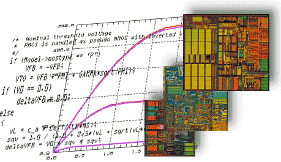

Links to spice device models
|
|
The
Berkeley's Device Group in the EECS department. This is
the home of the BSIM
group who develops the BSIM and BSIM SOI compact models.
The currently availabler models are BSIM3, BSIM4, BSIM6,
BSIMSOI and BSIMCMG models. |
|  |
The
home of the Enz-Krummenacher-Vittoz MOSFET compact model. The
model is hosted at the EPFL (Lusanne Polytechnic). EKV
version 2.6 and 3 code is available upon request. |
|
|
HICUM stands for HIgh CUrrent Model. It is a compact model
for bipolar devices. It is suitable for designing
high-frequency and high-current densities circuits in Si,
SiGe anf III-V. |
| The HiSIM
(Hiroshima-University STARC IGFET Model) is a family of
compact models for intrgrated devices with a MOSFET core.
HiSIM models are based on a complete surface potential
description. |
|
|
Large-signal MESFET model. It describes subthreshold
conduction and breakdown. Developed at Macquarie
University. |
| The
University of Florida MOSFET compact model. The UFSOI models
(UFPDB and FD/SOI) are implemented in a Type-I interface
(API), which has been glued to Spice3. |
| VBIC |
Vertical Bipolar Intercompany Model, eventually will replace Spice Gummel-Poon. |
The NXP Simkit
NXP distributes the source code for several models as an archive called "SimKit". The SimKit is a simulator-independent compact transistor model library.
The Predictive Technology Models
Arizona State University hosts the PTM web site. PTM stands for Predictive Technology Model, and is a collection of models for deep submicron technologies that can be used with ngspice when foundry models are not avaialable.
Organizations: